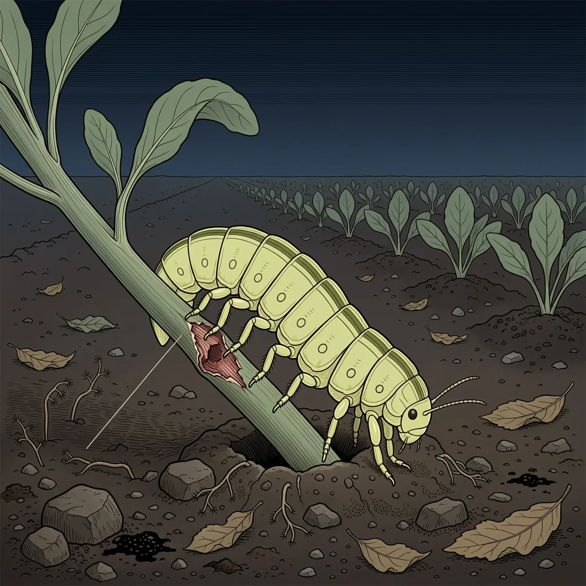
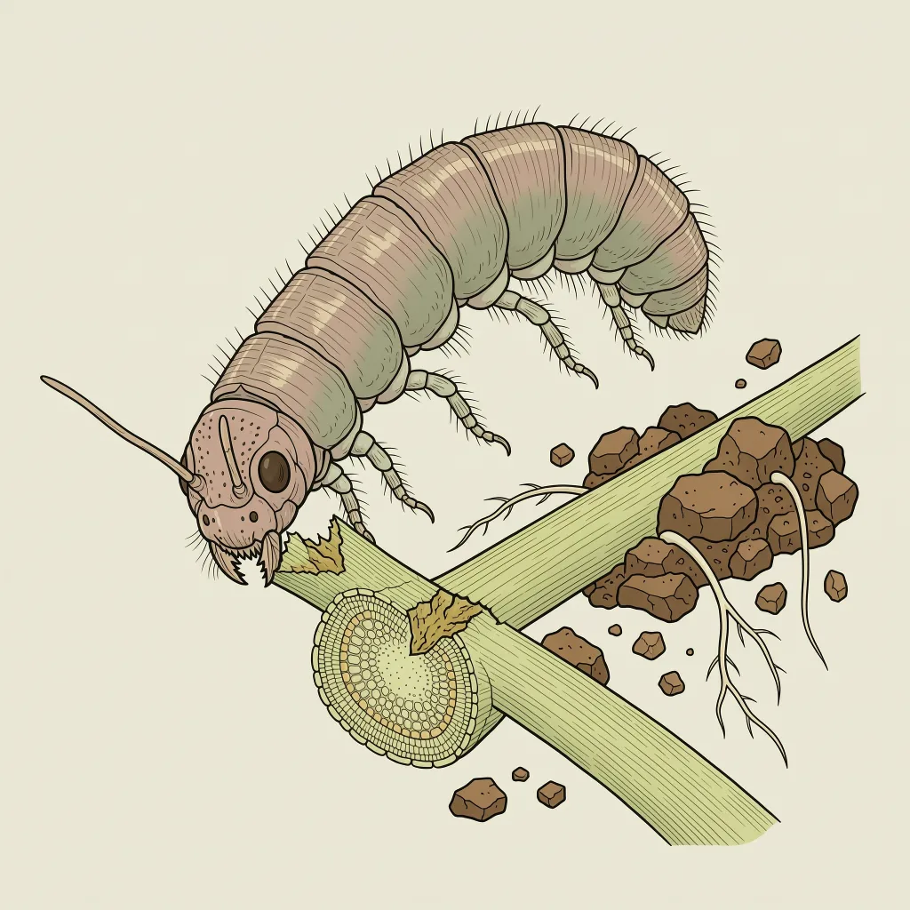

小地老虎是夜蛾科地老虎属的蛾类，俗称地蚕、切根虫，是蔬菜幼苗期的主要害虫之一。幼虫白天藏进土里，夜里爬出，贴着地面咬断幼苗茎基部，让整株苗当场倒下。成虫能远距离迁飞，随季节在不同纬度之间往返。按现有评估，这个物种本身属于无危。
菜畦边的表土里，白天几乎看不见活物；天一黑，小地老虎的幼虫从土里爬出来，贴着地面找下一株幼苗。一处地方要养得活小地老虎，得同时满足两件事：有能钻进去躲避白天的土层，有茎基部尚嫩的成行幼苗。成虫会飞，随季节在不同纬度之间往返，新播的菜地里因此总会重新出现它的卵。生物地理区划上，它通常被归入新北界。
小地老虎咬断的不是叶子，而是幼苗靠近地面的茎基部。一口下去，茎被切断，根还在土里，叶还在上头，但两者不再相连，整株苗当天就倒伏枯死。因为这种切法，它俗称切根虫，也叫地蚕。白天幼虫缩回土中，不易被发现；等人注意到菜畦缺了行，地下的虫多半已经不止咬断过一株。
反直觉的地方在于名单上的位置：作为菜园害虫它名声不好，可在保护名录里，小地老虎被标成无危，和濒危物种完全不是一档。成虫能长距离移动，季节不对就换个纬度飞走，人类的菜地反而为它备好了连续的食物与产卵处。缺了行的苗床翻下去，往往只能看到断掉的茎，那条虫白天在土里，夜里多半已经换了地方。
